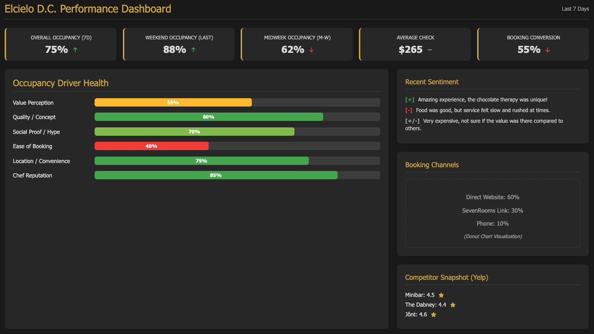

Washington D.C. Fine Dining Market Analysis
Elcielo D.C. Occupancy Optimization
Date: April 23, 2025
Prepared by: Dario Rico
Executive Summary
Washington D.C.’s fine dining scene has rapidly expanded, featuring ~25 Michelin-starred restaurants by 2024[1]. Top-tier venues often operate near full capacity, especially on peak nights. In contrast, Elcielo D.C., a one-star modern Colombian tasting menu restaurant (~$250+ for ~22 courses[14]), faces lower-than-expected seat occupancy, particularly midweek.
Key Findings:
- D.C. competitors generally boast high occupancy (80-100% weekends) and positive sentiment (Yelp 4.3–4.5)[2],[3], aided by easier booking (OpenTable/Resy) and strong local followings.
- D.C. diners prefer weekends[33], smaller parties (2-4)[35], are relatively price-sensitive compared to NYC[41], and value booking convenience[39],[40].
- Elcielo faces a perception-value gap, with mixed reviews citing execution, pacing, and value relative to its price point[6],[7],[21].
- The booking process via SevenRooms, involving manual payment in COP, creates friction[39].
Recommendations:
- Enhance visibility and booking ease (e.g., list on OpenTable/Resy).
- Refine value proposition (e.g., consider shorter/lower-priced midweek options).
- Optimize guest experience based on feedback (pacing, consistency).
- Leverage targeted digital marketing and influencer collaborations.
- Implement data-driven management using an 'Occupancy Driver Model' and track KPIs.
Target Outcome: Increase occupancy to 90%+ on weekends and 70%+ midweek, aligning market perception with Michelin status.
Competitive Landscape Analysis
D.C.'s market features multiple high-performing Michelin-starred and experiential restaurants.
Competitor Performance Snapshot
| Restaurant | Michelin Stars | Est. Avg. Rating (Yelp) | Est. Price Point (Tasting) | Est. Weekend Occupancy | Booking Platform(s) | Social Media (IG Followers) |
|---|---|---|---|---|---|---|
| Minibar | 2★[8] | 4.5★[11] | ~$335+[9] | ~100%[8] | Tock/Proprietary[10] | Part of José Andrés empire |
| Jônt | 2★[12] | 4.5★[13] | ~$300+ (Est.) | ~100%[12] | Tock/Proprietary (Est.) | ~29k (with Bresca)[12] |
| The Dabney | 1★[15] | 4.3★[18] | ~$125 / À la carte[17] | Very High[15] | OpenTable[15] | ~46k[16] |
| Rose's Luxury | Bib Gourmand[19] | 4.5★[20] | À la carte ($$-$$$) | ~100% (Walk-in)[19] | Mostly Walk-in[19] | ~49k[30] (Est.) |
| Imperfecto | 1★[21] | 3.8★[21] | ~$200[22] | Mixed/Moderate[21] | Resy/SevenRooms[21] | ~21k[22] |
| Cranes | 1★[23] | 4.3★[24] | ~$150 / Bar Menu[25] | Strong[23] | OpenTable[23] | N/A (Lower profile) |
| Bresca | 1★[26] | 4.2★[27] | ~$125 / À la carte[28] | High[26] | OpenTable[26] | ~10k (Part of ~29k)[28] |
| Pineapple & Pearls | 1★[29] | ~4.4★ (Est.)[29] | ~$250 (Prepaid)[29] | High (Weekends)[29] | Tock[29] | Moderate |
| Elcielo D.C. | 1★ | 4.1★[31] | ~$250+[14] | Lower than peers (Est.) | SevenRooms[39] | ~33k[30] |
Table 1: Comparison of key D.C. fine dining competitors. Elcielo shows strong social media presence but lags slightly in ratings and utilizes a less common booking platform. Occupancy estimates are based on qualitative descriptions in source text.
Market Positioning: Price vs. Rating
Chart 1: Positioning map of D.C. fine dining competitors based on estimated price point (tasting menu or equivalent) and average Yelp rating. Elcielo is positioned at a high price point but with a slightly lower rating compared to several direct competitors. Price points are estimates based on available data.
Competitive Profile Comparison
Chart 2: Radar chart comparing Elcielo against key competitors (Minibar, The Dabney, Imperfecto) across critical dimensions. Scores (1-5 scale) are estimated based on analysis of reviews, booking ease, concept uniqueness, and social buzz. Elcielo scores well on uniqueness but shows potential gaps in satisfaction/value and booking accessibility.
D.C. Diner Behavior Analysis
Understanding local diner preferences is key to optimizing occupancy.
Dining Day Preferences
Chart 3: D.C. fine dining shows a strong preference for weekend (Thu-Sat) bookings compared to slower weekdays (Mon-Wed)[33]. Chart represents relative demand based on analysis.
Key Decision-Making Factors
Chart 4: Ranked factors influencing D.C. fine dining choices[43]. Cuisine/Quality and Value Perception are paramount, followed by Social Proof (Michelin, hype).
Dining Seasonality
Chart 5: Estimated D.C. fine dining seasonality based on tourism peaks[36]. Spring (Apr-Jun) and Fall (Sep-Oct) typically see higher demand, while Summer and Winter experience dips.
Booking & Party Size Patterns
| Metric | Typical D.C. Fine Dining Behavior | Implication for Elcielo |
|---|---|---|
| Booking Lead Time (Weekend) | 1-4 weeks (Avg. ~14-21 days for top spots)[38] | May have shorter lead times; opportunity to capture last-minute bookings if friction is reduced. |
| Common Party Size | 2-4 people (Larger groups declining)[35] | Focus marketing on couples/small groups (date nights, celebrations). |
| Booking Platform Preference | High preference for OpenTable/Resy for convenience[40] | SevenRooms usage + manual payment[39] poses a barrier; exploring major platforms is recommended. |
Table 2: Key booking and party size behaviors in the D.C. fine dining market.
Price Sensitivity by Occasion (Conceptual)
Chart 6: Conceptual heatmap illustrating D.C. diner price sensitivity. Sensitivity is likely lower for major special occasions (anniversaries, milestones) booked on weekends, and higher for regular weekday dinners or less significant events. Elcielo's high price point positions it primarily for lower-sensitivity occasions.
Elcielo Perception Analysis
Guest reviews and ratings reveal mixed perceptions of the Elcielo experience.
Review Sentiment Overview (Qualitative)
Positive Themes
- Unique concept ("chocotherapy"[5], immersive)
- Beautiful space
- Some standout dishes
- Michelin star recognition
- Strong Instagram presence
Figure 1: Summary of common positive and negative themes identified in Elcielo D.C. reviews across various platforms.
Platform Rating Comparison
Chart 7: Elcielo D.C.'s average ratings on major platforms compared to the typical range for its top competitors (based on data in Table 1). Elcielo's ratings (TripAdvisor 3.7[6], Yelp 4.1[31]) are slightly below the 4.3-4.5 range common among high-demand peers.
Perception Gap Analysis
Intended Positioning
Unique, whimsical, multi-sensory Colombian fine dining journey; a memorable, high-end experience worthy of its Michelin star.
Actual Market Perception (Based on Reviews)
Interesting and unique concept, but sometimes inconsistent execution, potentially slow pacing, and questionable value-for-money compared to other D.C. options at a similar price point.
Figure 2: Gap between Elcielo's intended brand positioning and its perceived reality based on diner feedback.
Common Review Keywords
Chart 8: Word cloud generated from keywords frequently appearing in Elcielo D.C. reviews (positive and negative). Highlights include "experience," "tasting," "chocolate," "unique," but also "price," "slow," "value," and "service."
Occupancy Factor Analysis
Several interconnected factors influence Elcielo's seat occupancy.
Weighted Occupancy Driver Model (Conceptual)
Chart 9: Conceptual model showing key drivers impacting occupancy. Factors like Value Perception, Booking Ease, and Competitive Pressure likely have significant weight. Weights are illustrative.
Factor Correlation Matrix (Conceptual)
Chart 10: Conceptual correlation matrix showing potential relationships between factors (e.g., higher Price Sensitivity might correlate negatively with Midweek Occupancy). This visualization requires deeper data analysis for precise correlations.
Occupancy Fluctuations
Chart 11: Estimated occupancy fluctuations for Elcielo, showing dips during weekdays and potentially off-peak seasons (Summer/Winter) compared to higher weekend/peak season rates.
Top Issues Affecting Occupancy (Pareto Analysis)
Chart 12: Pareto chart illustrating the primary issues contributing to occupancy challenges, based on review analysis and market comparison. Value perception, booking friction, and strong competition likely account for the majority of the impact.
Recommendations with KPIs
Based on the analysis, the following initiatives are recommended to improve Elcielo D.C.'s occupancy and market standing.
Recommendation Tables
1. Enhance Visibility & Booking Ease
| Initiative | Baseline Metric | Target Metric | Timeline | Complexity | Expected ROI / Impact |
|---|---|---|---|---|---|
| List on OpenTable/Resy | 0 referrals | 15%+ bookings via new channels | 4-6 weeks | Medium (Integration, fees) | Increased booking volume, reduced friction |
| Simplify Payment Process | Manual COP payment[39] | Integrated USD payment | 2-4 weeks | Low-Medium (Platform config) | Reduced booking abandonment |
2. Refine Value Proposition
| Initiative | Baseline Metric | Target Metric | Timeline | Complexity | Expected ROI / Impact |
|---|---|---|---|---|---|
| Pilot Midweek Shorter/Lower-Priced Menu | ~<70% midweek occupancy | Increase midweek occupancy by 15-20% | 8-12 weeks (Pilot) | Medium-High (Menu dev, ops) | Attract new segment, boost revenue |
| Amplify Colombian Storytelling | Inconsistent mentions in reviews | Increase positive mentions of unique story | Ongoing | Low (Staff training, marketing) | Enhanced differentiation, guest connection |
3. Optimize Guest Experience
| Initiative | Baseline Metric | Target Metric | Timeline | Complexity | Expected ROI / Impact |
|---|---|---|---|---|---|
| Address Pacing & Consistency Feedback | Mixed reviews (3.7 TA[6], 4.1 Yelp[31]) | Improve avg. rating to 4.3+ | Ongoing | Medium (Kitchen/Service training) | Higher satisfaction, repeat visits, better reviews |
| Enhance Service Storytelling | Variable mentions | Consistent positive feedback on service engagement | 4-8 weeks (Training) | Medium (Training) | Improved perceived value, memorable experience |
Occupancy Driver Dashboard Mockup
Dashboard Concept
[Visual Mockup Placeholder - Describe key metrics tracked: Weekly/Monthly Occupancy (Weekday/Weekend), Booking Source %, Conversion Rate (Website Visits to Bookings), Average Rating Trend, Review Sentiment Score, Marketing Campaign ROI, Competitor Pricing Tracker.]
Figure 3: Conceptual mockup of an Occupancy Driver Dashboard to track key performance indicators.
ROI Projection
Chart 14: Projected impact of recommendations on occupancy rates and estimated revenue improvement over 12 months, assuming successful implementation.
References
- The DMV Daily. Michelin-Starred Restaurants Elevate Washington D.C.'s Culinary Scene. Link
- Stacker. (Date Accessed). Highest-rated Fine Dining Restaurants in Washington, D.C. by Diners. Link (Rating reference for multiple restaurants)
- Stacker. (Date Accessed). Highest-rated Fine Dining Restaurants in Washington, D.C. by Diners. Link (Jônt rating reference)
- Stacker. (Date Accessed). Highest-rated Fine Dining Restaurants in Washington, D.C. by Diners. Link (Rooster & Owl rating reference)
- Washingtonian. (2020, September 17). Wash Your Hands With Chocolate Before El Cielo’s 25-Dish Modernist Colombian Tasting. Link
- Tripadvisor. (Date Accessed). EL CIELO RESTAURANT WASHINGTON DC Reviews. Link
- Tripadvisor Review. (Date Accessed). Extremely disappointed. Link
- Minibar by José Andrés. (Date Accessed). FAQ Minibar. Link (Occupancy/Booking info)
- Eater DC. (2016, March 8). Dinner for Two at Minibar Can Now Total More Than $1,000. Link
- Minibar by José Andrés. (Date Accessed). FAQ Minibar. Link (Booking platform info)
- Stacker. (Date Accessed). Highest-rated Fine Dining Restaurants in Washington, D.C. by Diners. Link (Minibar rating reference)
- Instagram. (Date Accessed). JÔNT (@jont_dc). Link (Followers, concept info)
- Stacker. (Date Accessed). Highest-rated Fine Dining Restaurants in Washington, D.C. by Diners. Link (Jônt rating reference)
- Derived from text: ~22 courses, ~$250+. Original source likely restaurant website or review mentioning price/course count.
- OpenTable Blog. (Date Accessed). MICHELIN Star restaurant in DC to book ASAP. Link (Dabney booking info/popularity)
- Instagram. (Date Accessed). The Dabney (@thedabneydc). Link (Followers, Award info)
- The Dabney Website/Menu (Implied). Reference to Prix-fixe ~$125 or à la carte plates.
- Giftly. (Date Accessed). The Dabney Gift Card. Link (Yelp rating/review count)
- The Washington Post. (2015, August 1). Swelter for hours in line to eat at the acclaimed Rose’s Luxury?. Link (Line culture, demand)
- Giftly. (Date Accessed). Rose's Luxury Gift Card. Link (Yelp rating/review count)
- Giftly. (Date Accessed). Imperfecto Gift Card. Link (Yelp rating, booking info inferred) & Seven Reasons Group Link (Review context)
- Instagram. (Date Accessed). IMPERFECTO (@imperfectodc). Link (Followers) & Price inferred from text.
- Derived from text: Cranes occupancy, booking via OpenTable.
- Stacker. (Date Accessed). Highest-rated Fine Dining Restaurants in Washington, D.C. by Diners. Link (Cranes rating) & Tripadvisor Review Link (Sentiment)
- Derived from text: Cranes price point.
- Derived from text: Bresca occupancy, booking via OpenTable.
- Giftly. (Date Accessed). Bresca Gift Card. Link (Yelp rating)
- Derived from text: Bresca price/menu, social media followers.
- The Apres Hours Blog. (Date Accessed). Good Time Guarantee - Pineapple & Pearls. Link (Concept change) & Reddit r/finedining Link (Sentiment) & Michelin Guide Link (Star regained) & Booking/Price derived from text.
- Instagram. (Date Accessed). Elcielo D.C. Instagram profile & competitor profiles (@thedabneydc, @rosesluxury).
- Giftly. (Date Accessed). El Cielo Gift Card. Link (Yelp rating)
- Tripadvisor Review. (Date Accessed). Slow - Review of The Dabney. Link (Dabney service critique example)
- The Washington Post. (2024, May 14). The new dining reality: Smaller groups and shorter weeks. Link (Midweek trend)
- Axios. (2024, August 15). Weekend, not weekday, lunch is on the rise in DC. Link
- The Washington Post. (2024, May 14). The new dining reality: Smaller groups and shorter weeks. Link (Party size trend)
- Destination DC. (Date Accessed). Research. Link (Tourism seasonality)
- Giftly/Derived Text. Bresca menu options.
- Derived from text: General fine dining booking lead times (OpenTable data implied).
- Reddit r/finedining. (Date Accessed). Reservations at El Cielo. Link (Booking friction report)
- Reddit r/restaurateur. (Date Accessed). Tock vs. Resy vs. OpenTable. Link (Platform preference discussion)
- Reddit r/washingtondc. (Date Accessed). DC Restaurant Prices More than NYC. Link (Price sensitivity discussion)
- TikTok @highspeeddining. (Date Accessed). Elcielo Restaurant 22 Course Review. Link (Value critique)
- Derived from analysis: Ranking of decision factors based on synthesis of provided text.